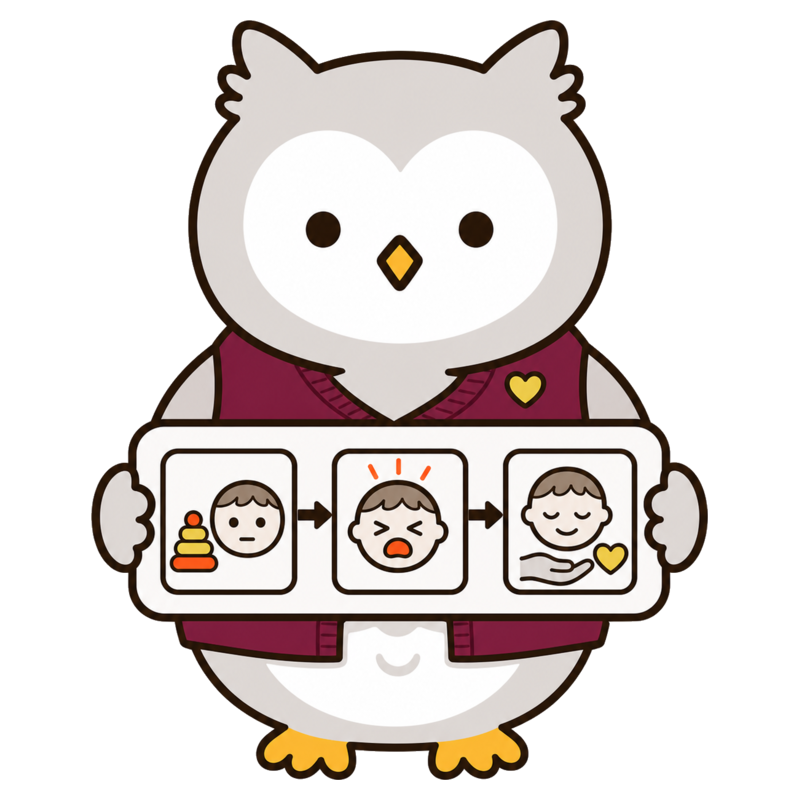
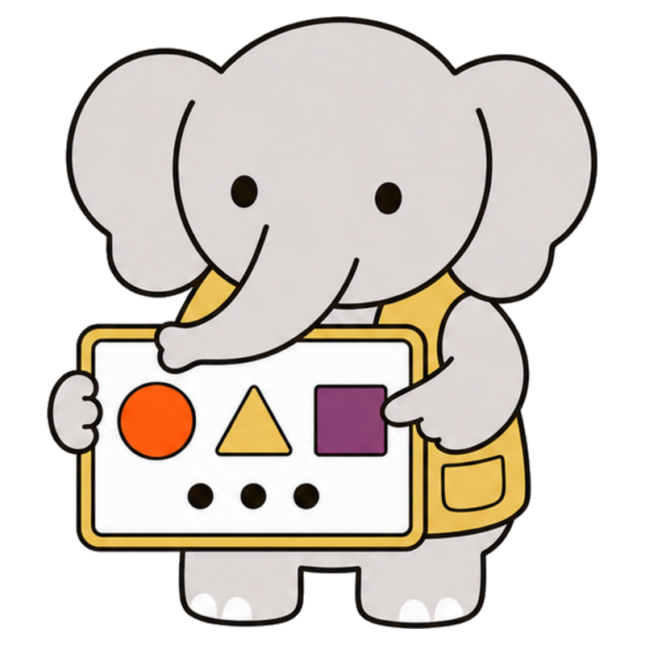
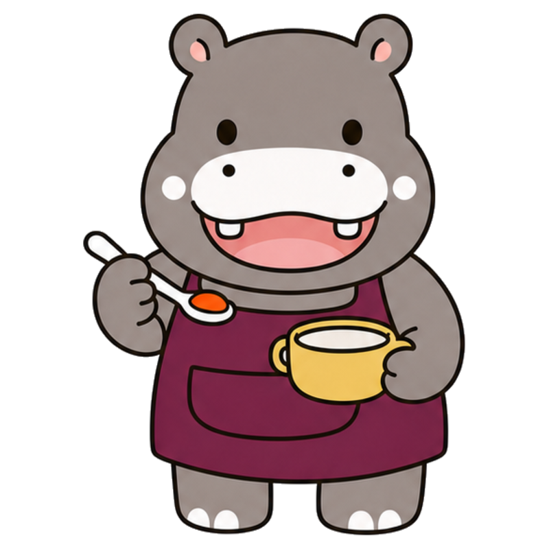
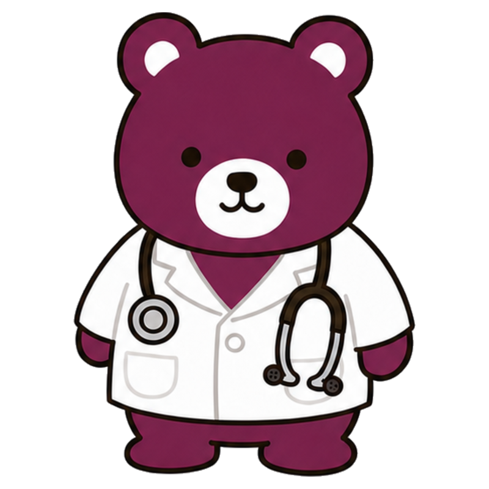

HUGMAP STORIES
きもちを、
ひらく
絵本。
ことばになる前のサインも、
見えにくい身体のがんばりも。
動物の先生たちと、いっしょに見つけます。
CHOOSE A WAY
いまの気持ちに合う入口から。
ことばになる前から、
おはなしは はじまっているよ。
TEACHER SHELF・ことばとコミュニケーション
ことり先生から、
見てみる。
絵本で子どもの気持ちに近づいたあと、FAQで理由や具体的な関わり方を確かめられます。
絵本『ぼくの「もういっかい」きこえた？』読む →関連するFAQ
STORY LIBRARY
先生と、本をえらぶ。
気になることから選んでも、好きな先生から選んでも大丈夫です。
ことばになる前のサインことりせんせい、
ことりせんせい、
ぼくの「もういっかい」
きこえた？
目、手、身体の動き。まだことばにならない「伝えたい」に出会うおはなし。
ことりせんせいと読む →みんなの力をつなぐきょうは、
きょうは、
だれの出番かな？
困りごとに合わせて、8人の先生が「できる方法」をつないでいく一日。
ヒーローチームと読む →




 8人、それぞれの見つけ方。
8人、それぞれの見つけ方。からだの感覚りすせんせい、
りすせんせい、
ぼくのからだは
なにをさがしているの？
行動を決めつけず、身体が探している感覚と安全な代わり方を考えるおはなし。
りすせんせいと読む →感覚と見えないつながりいっしょの
いっしょの
リズムは、
どこにある？
音、光、呼吸、身体の速さ。感覚を減らす・選ぶ・休むことで、親子の異なるリズムが出会うおはなし。
りすせんせいと探す →見えない身体のがんばりうさぎせんせい、
うさぎせんせい、
「かんたん」って
だれがきめたの？
動きに必要な力を知り、道具と環境で「できる形」をつくるおはなし。
うさぎせんせいと読む →遊びとおてての成長りすせんせいと、
りすせんせいと、
ふしぎなおてての
たからばこ
触る、入れる、積む、つまむ。遊びながら「できる」がつながるおはなし。
宝箱をひらく →記録から見つけるぽけっとさん、
ぽけっとさん、
ぼくの「いや！」は
どこからきたの？
一週間の小さな出来事を並べ、行動の前に重なっていた負担を見つけるおはなし。
ぽけっとさんと探す →